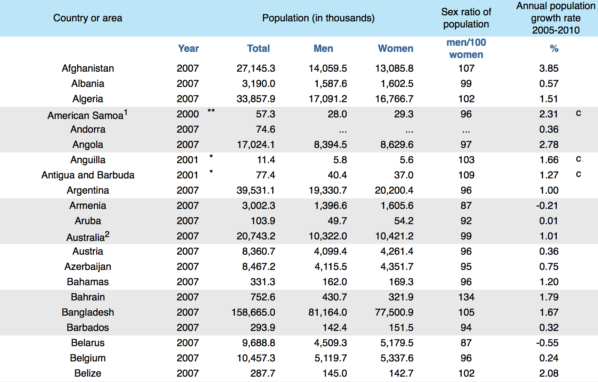

Tables from spreadsheets
Tables are often initially produced in a spreadsheet such as Microsoft Excel. Spreadsheets usually box all cells with horizontal and vertical gridlines as a default and many reports include tables that are copied from a spreadsheet without further formatting. Never publish tables that box all values.
Lines should only be used in tables to separate headings or groups of related rows and columns.
It is best to use as few lines as possible. Consider using a bold typeface for headings or using extra white space to separate rows and columns as an alternative to lines.
Reasons for HIV testing
Botswana has an extremely high incidence of HIV/AIDS and instituted Routine HIV testing in 2004. The table below shows the reasons given for getting an HIV test by those who were tested in 2006, as published in a report by the Botswana Ministry of Health.
| Reason | No. | % |
| Needle/Surg. Injuries | 279 | 0.2 |
| Rape | 1502 | 0.8 |
| TB | 1564 | 0.9 |
| STI | 2745 | 1.5 |
| Med Exam | 4717 | 2.6 |
| Clinical Suspicion | 15387 | 8.5 |
| PMTCT | 45590 | 25.0 |
| VCT | 102443 | 56.3 |
| Other | 7825 | 4.3 |
The centring of values in this frequency table make it harder to scan down columns and the gridlines are distracting and unnecessary. The table below presents the data more effectively.
| Reason | No. | % |
| Needle/Surg. Injuries | 279 | .2 |
| Rape | 1,502 | .8 |
| TB | 1,564 | .9 |
| STI | 2,745 | 1.5 |
| Med Exam | 4,717 | 2.6 |
| Clinical Suspicion | 15,387 | 8.5 |
| PMTCT (pregnancy) | 45,590 | 25.0 |
| VCT (voluntary) | 102,443 | 56.3 |
| Other | 7,825 | 4.3 |
Reading across rows of large tables
Simple frequency tables such as the HIV-testing table above only have a single column of values (or two columns if both counts and percentages are shown). Published tables often have many more columns — perhaps combining several frequency tables (e.g. separate counts for both males and females) or with other information about each row category.
In large multi-column tables, the first column usually contains names that label the rows (e.g. a region or company name) and it can be difficult associating values in the rightmost columns with their row label.
Although regular gridlines should be avoided in small tables, subtle gridlines can help read across rows of very large tables with many columns.
Hairlines can be drawn between occasional rows, or some rows can be printed over a very light grey background.
Some very large tables have so many columns that they stretch over two facing pages. The column of row labels can be repeated in the rightmost column of the table to make it easier to associate values with their row label.
Populations of countries
The first few rows of a table published by the United Nations Statistics Division about the populations in all UN countries in mid-2007 (or the most recent figures) are shown below. Light shading behind some rows makes it easier to read across from the country names to the annual population growth rates.

(The table was followed by several footnotes which are not repeated here.)